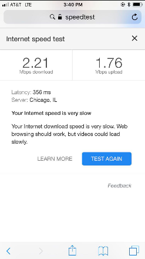

DPAC Experiment
On a rather cold, chilly, and windy April afternoon, I drove to Davis Purdue Agricultural Center (DPAC) along with my colleague, Matt to collect some machine data.
The goal of this experiment was to see if there would be any sort of hiccups when using ISOBlue 2.0 to collect machine data. The data would be further post-processed to generate different maps during the season to check the progress or detect anomalies for different machine operations. The machine of interest is a Case 140 Pro tractor and Case 310 CVT. It rained for a few days before we went out so the fields were very wet so we didn't test drive the tractor in any of the fields.
Two main things we checked are:
- cellular connectivity
- machine data collection
For cellular connectivity, we were initially worried that ISOBlue 2.0 would not connect to the AT&T network correctly since the area is mostly covered by Verizon. We did some speed test using our cell phone first (my phone uses AT&T):

Luckily, although the speed test doesn't show great result, the ISOBlue 2.0 was still able to connect to the network fine after it was turned on.
After we checked the ISOBlue 2.0 was collecting data, we started driving the tractor. We did make some different maneuvers to make the trip interesting. For the 310 CVT tractor, we plugged in an ISOBlue 2.0 to check whether it worked but we didn't drive it around.
After getting back from the site, I parsed out the data. Instead of creating static maps for the data, I created a short animation showing what happened in the field along with some machine status parameters. Check out the video!
 !
!